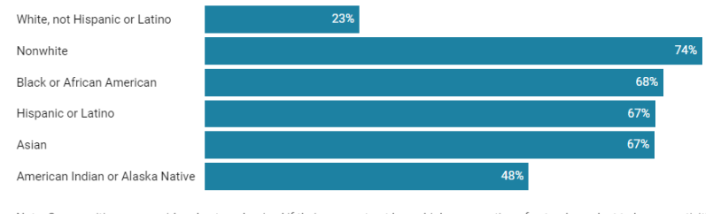
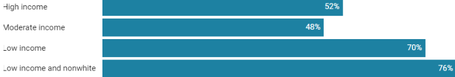
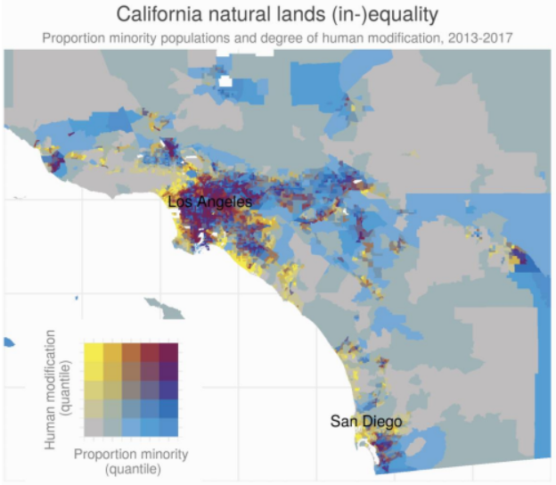
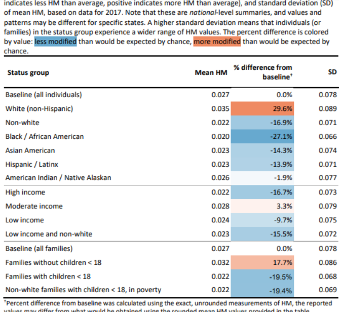

Initial Research
Problem statement
Limited acccess to nature further perpetuates environmental racism.
Need statement
We need to dedicate more resources into lower income communities that encourage better access to, and education about the environment.
There are over 73 parks in the east bay.
Only 3.2% of Alemeda county budget goes into parks.
The majority of pakrs are located outside of lower income neighborhoods.
Source
Bias Factor: Left of Center
- Important Data and Ideas: Clean drinking water, clean air, public parks and beaches, biodiversity, and open spaces are shared goods to which every person in the United States has an equal right both in principle and in law
- In communities of color and low-income communities, families have too few safe, close-to-home parks and coastlines where they are able to get outside.
- Redlining, forced migration, and economic segregation are just a few of the unjust policies and forces that have created barriers to, and a gradient of distance from, the United States’ remaining natural areas for people of color
- Nature destruction has had the largest impact on low-income communities of color. More than 76 percent of people who live in low-income communities of color live in nature-deprived places.


Source
Bias Factor: No bias
- HM: human modification; measures the use of land by humans
- Results indicate substantial differences in the degree of HM faced by different racial, ethnic, income, and family status groups
- eople who live in tracts with a relatively large white population experience 11.7% less HM than the national average

